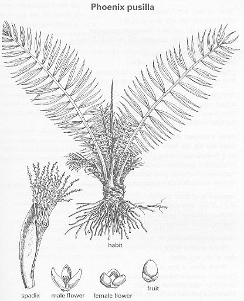

Phoenix pusilla Gaertn.
Taxonomic Details

----- Correct Name
----- Classification
----- Synonyms
----- Common Names
Other Biological Details
----- Habit and Habitat
----- Diagnostic Features
----- Reproductive Biology
---------- Breeding System
---------- Phenology
---------- Pollinators
---------- Seed Biology
----------Seed Germination
---------Cultivation
----- Major Pests and Diseases
Economic Potential and Uses
----- Parts Used
-----Uses
----- Harvesting Practices
----- Produce and Products
----- Chemistry
----- Processing Techniques
----- Other uses
----- Economic Potential to the Country
----- Export Potential
Miscellaneous Information
Literature
Taxonomic
Details
Correct Name
: Phoenix pusilla Gaertn.
Family : Palmae
Synonyms : Phoenix farinifera Roxb.;
Common Names :
English: Small wild date-palm, Wild date,
Hindi: Ithi,Pala wat, Palavat,
Malayalam: Eentha, Chittintal, Chillintal, Cittintal,
Tamil: Ithi, sagi, Cittintu, Itechi, Siruintu
Telugu: Chiruta-ita, Chitti-ita, Cinna, Eechala,
Kannada: Hullichala, Sanna-ichalu, Eechakeya, Indu,
Back to Top
Other
Biological Details
HABIT & HABITAT
A shrubby palm found on the Coromandel
coast and in other parts of South India.
Habitat: Dry forests and Plains.
Availability :
Misc: Coromandel coast.
Country: India.
Zone: South,
State: Karnataka, Kerala and Tamil Nadu.
District: Chengalpattu, Coimbatore, Ramnathapuram, Salem, South Arcot,
Thanjavur, Tiruchchirappalli, Tirunelveli and Trichurapalli.
Status :
Back to Top
DIAGNOSTIC
FEATURES
Stem very short 35-45 cm. long, enveloped
in old leaf bases ; leaves 1.0-1.5 m. long: pinnae 4-farious, sword shaped,
pale green ; spadices 20-30 cm. long, much branched.Male flowers white, female greenish ; berry
c. 1.25 cm. long, dull purple black ; seed cartilaginous, longitudinally grooved.
Back to Top
REPRODUCTIVE BIOLOGY
Breeding System :
Phenology :
Pollinators:
Seed Biology :
Seed Germination:
Cultivation:
Back to Top
MAJOR PESTS & DISEASES
Pests:
Diseases:
Back to Top
Economic
Potential and Uses
Parts used
Fruits, Seeds Stem and Young terminal leaf bud.
Uses
-
The stem freed from the leaves and the outer woody fibrous covering, yields a
farinaceous substance eaten in times of scarcity.
- The farinaceous matter is separated
by beating pieces of stem in a mortar ; it is sifted, boiled into a thick gruel
or kanji and consumed.
- The young terminal leaf bud is also reported to be eaten.
- The fruits are edible and contain a small quantity of sweet pulp.
Harvesting Practices
Produce and Products
Back to Top
Chemistry
Back to Top
Processing Techniques
Back to Top
Other Uses
-
The seeds are made into a paste by triturating with water and applied in inflammation
of the eyes.
-
The fresh sap is cooling and laxative. The palm yields a gum which is reported
to be used in diarrhoea and urinary disorders.
-
The leaves are used for thatching and for making coarse mats-the-petioles are
split and woven into inferior type of baskets. The leaves are reported afford
a valuable fuel for potteries in Mysore (Cameron).
- The gruel affords less nourishment the common sago and is bitter when
boiled.
- Fruits are prescribed
in respiratory disorders and fever.
Back to Top
Economical
Potential to the country
Back to Top
Export Potential
Back to Top
Miscellaneous
Information
Back to Top
Literature
Back to Top